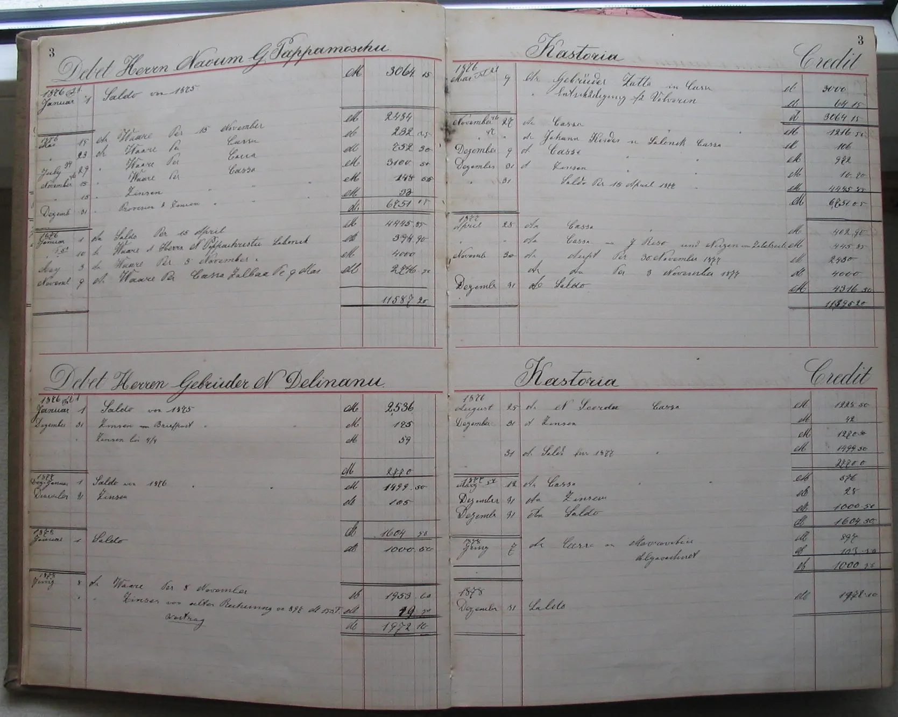
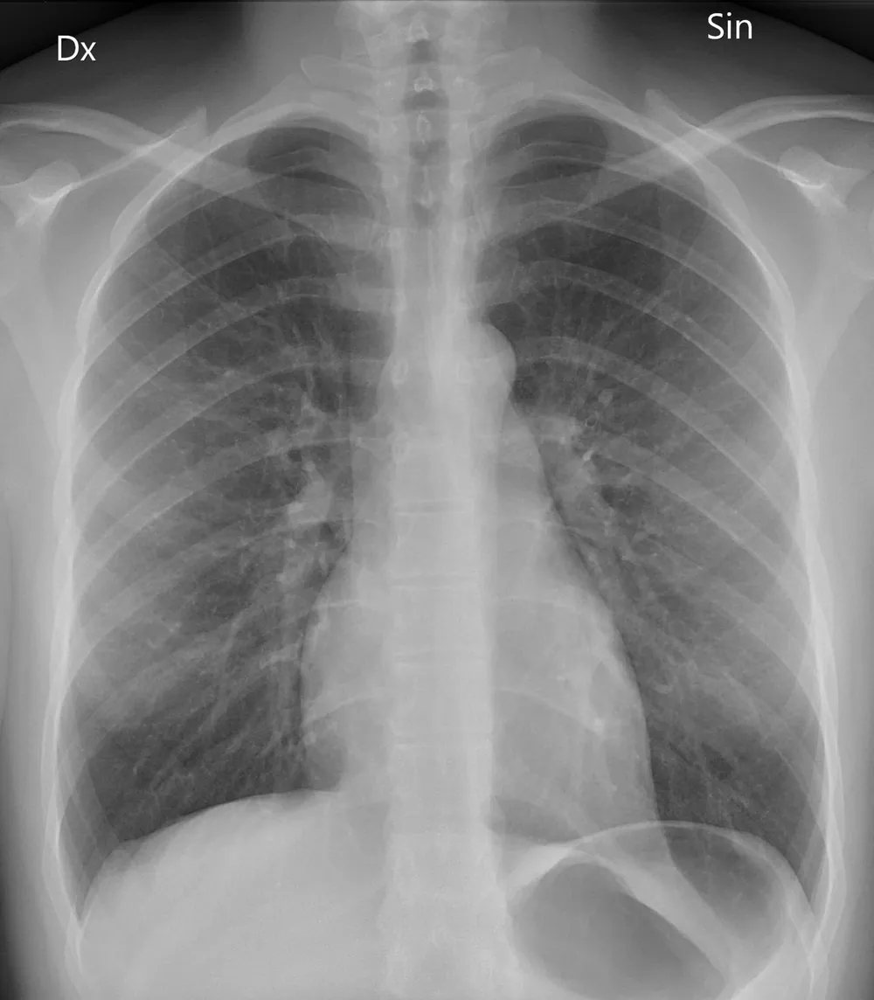

Financial statements
A filing arrives as pages of line items and figures. Every figure has to be found before it can be tagged, and a long annual report holds thousands.

Data scientist at DataTracks. I build the ML and GenAI systems that read financial statements in production.
The sample statement tags itself the way my production models tag a filing, with public IFRS concept names. Pick a line to see how the model reads it, or tag a line of your own.
Statement of profit or loss
Pick a line to see its tokens and labels.
Every figure in a regulatory filing needs the right concept from a taxonomy. My LSTM + NER models tag them, taxonomy by taxonomy, in production.
A filing arrives as pages of line items and figures. Every figure has to be found before it can be tagged, and a long annual report holds thousands.

Each line is cleaned and split into tokens, and its context travels with it: which statement, which period, which unit.
Revenue4,250
Revenue4,250
A sequence model labels the tokens: where a line item begins, which words continue it, and which token is the value.
RevenueB-ITEM4,250B-VAL
CostB-ITEMofI-ITEMsalesI-ITEM(2,810)B-VAL
Each region publishes its own taxonomy with its own rules, so each gets an independent pipeline. I trained and shipped two new ones end to end.
Revenue4,250
One line under three public taxonomies.
The models run as FastAPI services in Docker on on-premise servers, answering the product over REST with low latency.
POST /tag
{
"line": "Revenue",
"value": 4250000,
"unit": "GBP",
"period": "2025-01-01/2025-12-31",
"concept": "ifrs-full:Revenue",
"confidence": 0.99
}The tag lands on the figure inside the compliance product, and Grafana and Prometheus watch every service that put it there.
Latency and errors watched in Grafana and Prometheus
Python, LSTM, NER, XBRL, Docker, FastAPI, REST APIs, Grafana, Prometheus
Proprietary work. The figures and concepts on this page are samples with public taxonomy names.
Writers in a Word-like editor get the next words as they type, retrieved from domain text and fast enough to keep up.
Type “The directors have” and press Tab to accept. A small in-browser stand-in that retrieves from sample annual-report sentences.
Nine projects I designed and built end to end, from RAG assistants to LoRA fine-tuning. Pick one to see it working.
Retrieval-augmented question answering over your own documents with AWS Bedrock (Titan LLM) and LangChain, so answers come from your sources and not from guesses.
AWS Bedrock, Titan LLM, Titan Embeddings, LangChain, ChromaDB, Streamlit, Python
Ask a codebase questions in plain English. Mistral-7B on PyTorch answers from semantic search over the actual source files.
Mistral-7B, PyTorch, LangChain, SentenceTransformers, ChromaDB, FAISS, Streamlit
The repository is private. Source available on request.
Students talk to their own lecture notes, PDFs and quizzes, and get answers grounded in their course material, like a private tutor.
LangChain, Flan-T5, Hugging Face, Streamlit
The public repository is being rebuilt, so some source files are temporarily unavailable.
Research presented at ICCCAI-2024: topic modeling that shows what a resume is really about, matches it to a role and drafts the interview questions.
Python, LDA, Scikit-learn, NLP, OpenAI API, Streamlit
Topic How retrieval-augmented generation reduces hallucinations
Ships as web dashboard · REST API · CLI · Docker · Prometheus metrics
Researcher, Writer and Editor agents, coordinated with LangGraph, research a topic and turn it into an edited blog post.
LangGraph, FastAPI, Ollama, OpenAI, Docker, Prometheus
ParagraphPhotosynthesis takes place in the chloroplasts, where chlorophyll absorbs light energy and converts carbon dioxide and water into glucose and oxygen.
Where in the plant cell does photosynthesis take place?
Mistral-7B-Instruct fine-tuned with LoRA adapters to write multiple-choice questions from academic paragraphs, published on the Hugging Face Hub.
Mistral-7B, LoRA, PEFT, bitsandbytes, Transformers
A two-part experiment in teaching a small language model to write stories in Tamil: a full fine-tuning baseline, then a parameter-efficient LoRA run.
Transformers, LoRA, PEFT, Datasets

A CNN that classifies chest X-rays as Normal or Pneumonia, with Grad-CAM maps that show which regions drove each prediction.
TensorFlow, Keras, OpenCV, Grad-CAM, Streamlit
Revenue by region, ₹ crore
An end-to-end analysis of car sales: cleaning and exploration in Python, KPI queries in SQL and interactive Power BI dashboards.
Python, SQL, Pandas, Power BI
From classical NLP to large language models to production ML, in three roles since June 2024.
July 2025 – PresentCurrent role
DataTracks
Jan 2025 – June 2025Virtual internship
Dtyle.AI, incubated at IIT Madras
June 2024 – Dec 2024Internship
Cognibot Labs
Every tool here is tagged with the work it was used in.
“LDA-Powered Resume Screening Dashboard with Token Indexing & Streamlit”
Published and presented at ICCCAI-2024, in association with Taylor’s University, Malaysia. The dashboard surfaces each resume’s dominant topics with LDA, scores it against a role and drafts interview questions.
80%+
lingesh:
Sathyabama University, Chennai. Full-time, 2020 to 2024.
8.41
lingesh:
Email is the quickest way to reach me. My résumé has the full details.
lingeshsrinivasan1@gmail.com